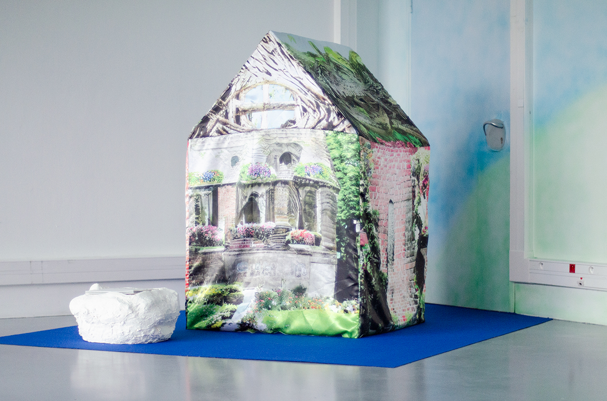
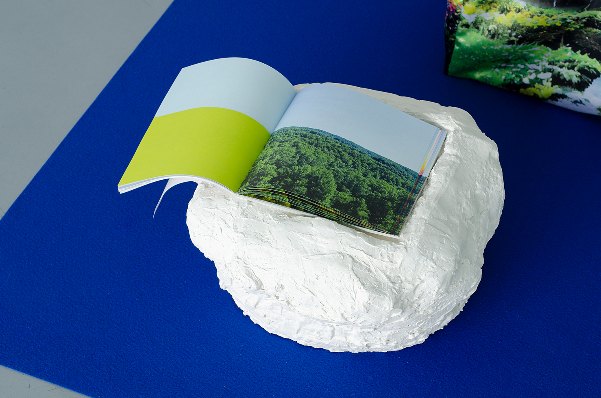

(fig.1)


(fig.2)

Cette cabane (fig.1)est inspirée des maisonnettes en tissu pour enfant dont les motifs sont l’archétype de la maison occidentale. Elles se présentent sous la forme d’une housse en tissu décorée en dessin, avec de petites variations mais toujours sur le même modèle : une base carré, une porte rectangulaire entourée de pots de fleurs, de chaque côte de celle-ci des fenêtres avec leurs jardinières respectives … Et tout cela dans des couleurs vives.
GauGAN 2, une intelligence artificielle à réseaux de neurones, permet justement en partant de dessins de créer des images photoréalistes, originellement de paysages. J’ai donc dessiné sur l’interface, ressemblant à celle du logiciel Paint, ces fameux éléments semblables sur chacune de ces cabanes en textiles. C’est avec cette IA que j’ai réinterprété chaque face de cette cabane en remplaçant les dessins par l’interprétation que la machine en a fait.
Cette édition(fig.2) regroupe l’ensemble de mes expérimentations sur GauGAN 2 réalisées pour la fabrication de la cabane. Un marque page permet d’identifier l’élément du paysage sélectionné suivant la classification colorée de l’interface de la machine.
Ce livre détail l’impact des modifications, même petites, que le dessin engendre sur l’image photoréaliste générée en vis à vis et la construction de l’image liée à l’élément du paysage à proximité.